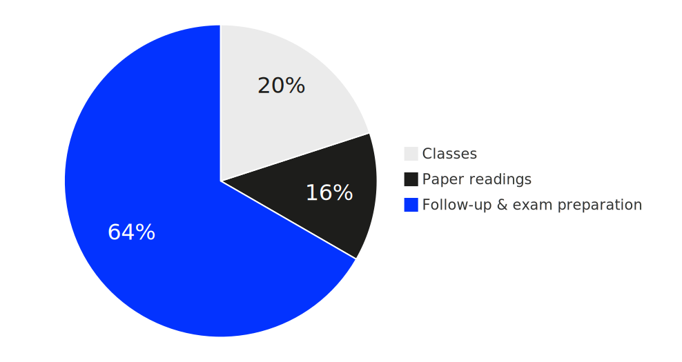

%%{init: {'theme':'base', 'themeVariables': { 'xyChart': {'backgroundColor': 'transparent', 'titleColor': '#0333ff',
'xAxisLabelColor': '#333', 'yAxisLabelColor': '#333', 'plotColorPalette': '#0333ff'}}, 'xyChart': {'width': 700,
'height': 350}}}%%
xychart-beta
x-axis "Grade" ["1,00", "1,30", "1,70", "2,00", "2,30", "2,70", "3,00", "3,30", "3,70", "4,00", "5,00"]
y-axis "Count" 0 --> 20
bar [4, 3, 1, 3, 2, 3, 7, 10, 5, 9, 20]
Motivation
There is more vacuity about strategy than about any other topic in business today. John Kay, Financial Times in Mintzberg et al. (2005)
While this observation about strategic vacuity remains painfully relevant, it reflects a deeper challenge: in contemporary firms, strategy can no longer be untangled from digital technologies, particularly AI. Modern strategizing processes—from competitive analysis and resource allocation to performance monitoring and strategic adaptation—are increasingly embedded within and enabled by digital systems.
Understanding business strategy frameworks, strategic planning processes, and performance measurement approaches is therefore essential for developing digital solutions that truly create value rather than simply automating existing inefficiencies. Without grounding in how organizations formulate strategies, assess performance through balanced scorecards and variance analysis, and manage through control systems, IT and AI professionals risk building sophisticated technologies that miss strategic context entirely.
Conversely, strategic thinking divorced from digital capabilities remains the kind of empty rhetoric Kay criticizes. In an era where strategy and technology are fundamentally intertwined, mastering both strategic frameworks and performance management principles becomes prerequisite for creating digital solutions that drive genuine competitive advantage.
Contents
In this course, we will have a look at following topics
- Understanding strategy
— definition, formation, and competitive positioning (lectures 1-3) - Building strategic advantage
— resources, capabilities, and organizational design (lectures 4-6) - Performance management and control
— measuring and managing strategic performance (lectures 7-9)
Learning objectives
During this course, you should advance your skills in the following areas:
- Understanding of concepts and taxonomies of strategy
- Basic knowledge of underlying theories of strategic management and decision-making
- Understanding of tools and frameworks for the development, analysis and implementation of strategies
- Knowledge of key concepts and frameworks for decision making under uncertainty
- Understanding of the role of IT strategy and its relationship with business strategy
- Ability to work independently with literature to derive key-insights
- Application of concepts, tools, and framework in real-life cases
Delivery
This course will be taught using traditional synchronous lectures.
The focus of the classes is to briefly introduce, discuss and apply major concepts, tools and methods of strategic management.
Many of the classes will involve group work, discussions and short presentations.
The greatest amount of work is in preparing for and following up lectures in order to become sufficiently familiar with and understand the content.
It is necessary to prepare for each session, for instance by reading a paper, details (see Table 2).
Please prepare your schedule accordingly.
Effort

For this course you will receive 5 ECTS. This corresponds to approx. 150 hours of work required by an average student to pass the course.
- Classes (approx. 30 hours)
- Paper reading (approx. 25 hours; approx. 2.5 hours per paper)
- Follow-up and exam preparation (do the math yourself)
Grading
Exam
There will be a written exam at the end of the semester.
The exam will
- take place during the examination weeks,
- will last 90 minutes,
- cover all contents discussed in lecture,
- focus on the application of the knowledge gained in the course.
A note on grades
It is unlikely that every student will receive a very good grade, i.e. deliver an outstanding performance — see the meaning of grades. Instead, it is to be expected that the grades will spread across the spectrum.
| Grade | Meaning |
|---|---|
1 — very good |
A truly outstanding achievement that (not only) shows no deficiencies in the criteria mentioned, but also gives both the supervisor and external assessors an excellent impression. |
2 — good |
Work that exceeds the average requirements/performance and is easily recognizable and presentable to the outside world as a “good performance”. |
| Note | 2.5 is the average of passed assessments, i.e., an “average performance” |
3 — satisfactory |
A performance that achieves the desired goal “to a satisfactory extent”; however, deficiencies can be identified here and there. |
4 — sufficient |
A performance that “still adequately satisfies” the requirements, but deviates from the expectations placed on it in several ways. |
5 — not sufficient |
A performance that does not meet several of the criteria mentioned. |
Last year’s results
This is the grade distribution from last year (average grade 3.5):
Schedule
| Date | Topic | Preparation |
|---|---|---|
| 09.10.25 | Strategy Definition and Schools | — |
| 16.10.25 | Competitive Analysis and Positioning | Read Hallegatte (2009) |
| 23.10.25 | Resource-based Advantagesn | Read Peteraf (1993) |
| 30.11.25 | Strategy Formation | Read Mintzberg (1978), research on Netflix |
| 06.11.25 | Self-study (consolidation) | Review the contents, prepare questions |
| 13.11.25 | IT-Kongress, Q&A (12 am - 1 pm, Zoom | Review the contents, prepare questions |
| 20.11.25 | Organizational Design | Listen to Decoder and read Lorenz & Buchwald (2023) |
| 27.11.25 | Ethics and Values | Read Barnett & Salomon (2012) |
| 04.12.25 | Meta Case Study (Pt. 1) | Listen to Meta Story on Acquired |
| 11.12.25 | Corporate Performance Management | — |
| 18.12.25 | CPM and OKRs | CPM research & presentation |
| 08.01.25 | Meta Case Study (Pt. 2) | Research data for all case study tasks |
| 15.01.26 | IT Strategy | Read Chen et al. (2010) |
| 22.01.26 | Exam Preparation | Review the contents, prepare questions |
Literature
Barnett, M. L., & Salomon, R. M. (2012). Does it pay to be really good? Addressing the shape of the relationship between social and financial performance. Strategic Management Journal, 33(11), 1304–1320.
Chen, D. Q., Mocker, M., Preston, D. S., & Teubner, A. (2010). Information systems strategy: Reconceptualization, measurement, and implications. MIS Quarterly, 233–259.
Hallegatte, S. (2009). Strategies to adapt to an uncertain climate change. Global Environmental Change, 19(2), 240–247.
Lorenz, F., & Buchwald, A. (2023). A perfect match or an arranged marriage? How chief digital officers and chief information officers perceive their relationship: A dyadic research design. European Journal of Information Systems, 32(3), 372–389.
Mintzberg, H. (1978). Patterns in strategy formation. Management Science, 24(9), 934–948.
Mintzberg, H., Ahlstrand, B. W., & Lampel, J. (2005). Strategy bites back: It is a lot more, and less, than you ever imagined–. Pearson Education.
Peteraf, M. A. (1993). The cornerstones of competitive advantage: A resource-based view. Strategic Management Journal, 14(3), 179–191.